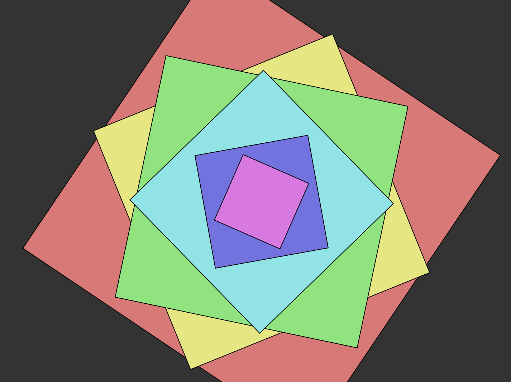
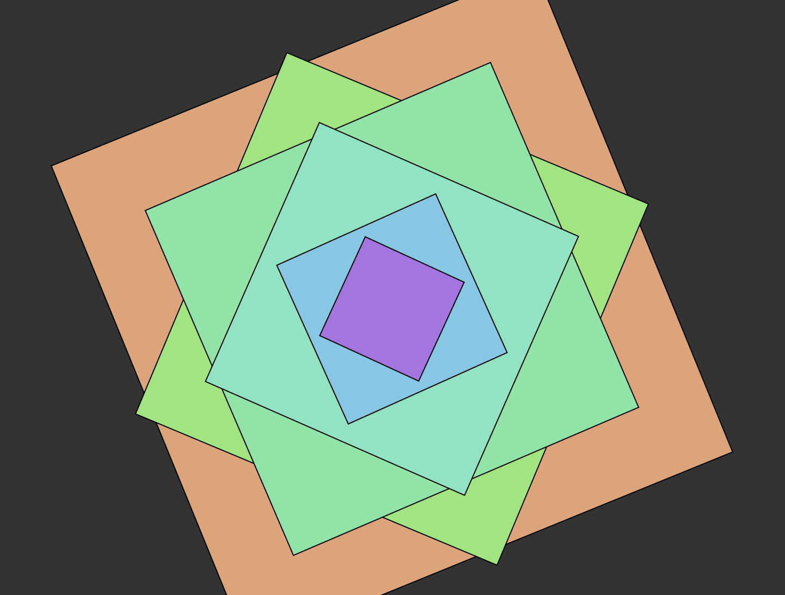

Iteration 1: I started by drawing square and made them rotate to establish a repeating motion system.
Iteration 2: Adjusted the rotation rate and spacing to make the movement feel smoother and less mechanical.
Iteration 3: Expanded from two squares to a full set of layered squares, keeping the same centered composition.
Iteration 4: Refined the size list and layer order so the visual rhythm became clearer and more structured.
Iteration 5: After building the layered motion, I added a time-based delay so the color change only starts after a short interval(4 seconds).
Iteration 6: I tuned the color shift intensity and timing so the color transition reads as a second movement rather than random noise.